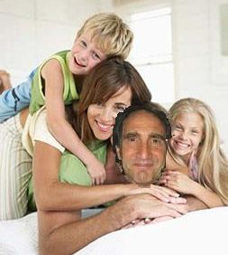

www.BlueCanyonSatire.com - mostly
satire by Jim Terr
Comforting the
afflicated, afflicting the comfortable..
- with the
help of the occasional donation
(This website is WAY out of date, but has some old stuff you may enjoy..)
Now over Two million YouTube
views on our satires and other stuff!
BLURBS FROM REPUTABLE INDIVIDUALS
"A mostly non-partisan, equal-opportunity annoyer."
Promoting
Truth, Justice and Comedy since 1988.
MAMAS DON'T LET YOUR BABIES
GROW UP TO BE NARCISSISTS
(more at www.TrumpGov.us )

THIS SITE IS NOT KEPT WELL-UPDATED, BUT HERE IS
A SMATTERING OF RECENT VIDEOS as of SEPTEMBER, 2015:
To see full-sized on YouTube, click on title at top of video...
|
|
|
|
|
|
|
|
ONLY because I’ve received about 100 “End of year – donate now!” notices, I remind you that these satire songs & videos, which are seen by thousands and which are hopefully helpful, are done with the help of DONATIONS which allow me to take the time to do them and promote them. Please see DONATE button at top… Thank you |

"Wow - that was scary, not to
mention entertaining! Excellent acting. Effective satire
for those who already have sincere concerns about the very
confused candidacy of Mitt."
Interview on JIM BOHANNON national radio show 12-12-11 (27 min, MP3)
Recent vids...
|
|
|
|
|
|
|
|
|
NEWS FLASH!
Election stolen from Jim Terr in Arizona
primary !
|
NEW
CD AVAILABLE NOW!
CD and
ORDER INFO
 ALBUQUERQUE JOURNAL article including video of song which is NOT on this CD SEE BELOW Link to BuDDy CD info |
"Chinese Money" |
SAMPLER OF ALL 24 SONGS ON CD!


(Just a bumper sticker idea, free for the
stealing)
Songs featured on Thom Hartmann, BuzzFlash, Jim Bohannon, Danny
Shechter,
Rude Pundit, and many others over time......
Recent in-depth INTERVIEW
( This is not a complete listing - visit YouTube channel HYMIEHYMIE )
MP3 audio for
broadcast"Goodbye Columbus"
Full
song & conversation on Jim Bohannon radio show
MP3
for broadcast
|
|
|
|
|
|
|
|
|
|
|
|
|
|
|
|
|
|
|
|
|
|
|
|
|
|
AND THE OCCASIONAL |
|
|
|
(This is not a complete listing - visit YouTube channel HYMIEHYMIE)
The "culture wars" reduced to 7 letters!
AUDIO
FOR BROADCAST
A few of the newest satiric videos (See YouTube to find all latest)
|
|
|
|
|

NEWS
FLASH: Even Obama can't sell Jim Terr books! (see
below)
"REMEMBER
SEPTEMBER 12th" - info here VIDEO
HERE!
|
"OnSatire"- parody of OnStar ads |
"My Friend will Friend You" |
|
"ROBUST PUBLIC OPTION" |
"JACKALOPE DROPPINGS" ad
|
(audio for broadcast, MP3 1:32)
Thanks to Thom Hartmann
for this mighty fine idea!
MP3 AUDIO FOR BROADCAST: Short
- no break Full-length,
with instrumental break
Full-length, with little
girl Public Campaign Finance speech in break
Hey
kids!! Wanna get pissed off all over again? Watch this brilliant
video on
YouTube about how "W" spent the morning of 9-11: "A
September to Remember"
Musical political video commentary: "HUGE STIMULUS PACKAGE"
|
NEWS!
Prominent satirist quits
to spend more time with family  "And who could blame me?" he asks. "Scram, kids!" |
|
JT
featured on CBC (Canadian radio "The Current")
9-25-08 (Hear exerpt) regarding this song and this video, re CEO salaries (Hear full segment here, "Part One") |
|
|
STRONG & STEADY - Obama "James Brown" tribute Click here for MP3 audio for broadcast (End of audio is "blank" - no debate speech) |
|
An "attack ad" parody of the 1966 Robert Parker hit, "Barefootin'"  This link MP3 audio only, for radio download |
Lyrics Blog article Other new videos: "Joe
the Plumber" - music video John
McCain is NOT the Antichrist "Drill
Baby" - Palin parody of Roy Orbison's "Dream Baby"
Sarah Palin Hunts Wolves and Liberals AUDIO FOR BROADCAST.
|
Here's
something great from another "orchestra": Takin'
it Back with Barack, Jack
|
|
|
If weirdness wins, then Bush triumphs: the "uniter not a
divider" became the most polarizing president ever, until
even Conservatives dumped him; the "not a nation-builder"
decided the best way to get rid of Bin Laden in Afganistan
was to attack Saddam in Iraq; the "compassionate
conservative" widened the gap between rich and poor and
ran up the deficit while doing so -- how weird can you
get? |
Check out SwingStateOfMind - blog with ironic tone required for New Mexico politics
 |
"The Ballad of La Bajada Mesa" (mp3) recorded
for the Rural Conservation Alliance |
NEW VIDEO OF OLD SONG: ""Bosses of
the World, Unite!"
NEW: "Brother Can You Spare a Couple
Billion?" corporate welfare song/video
|
"What'd You
Get For Your Two Trillion Dollars?" (Audio
MP3) VIDEO
Startling satire news! (see below)
"LAY
THAT CELL PHONE DOWN!"
 |
Jim Terr's work has aired on the ABC, CBS, NBC/Mutual, Westwood One, BBC (British) and National Public Radio networks, Air America, Voice of America, the Larry King, Jim Bohannon, G. Gordon Liddy, Jim Hightower, Paul Harvey, Thom Hartmann, Peter Werbe, Mike Malloy, Dr. Demento, "Mountain Stage," Sam Seder, Jon Elliott, "This Way Out" and "Whaddya Know?" radio shows, NBC- and CBS-TV News, in film, and has been broadcast in over 20 countries. He wrote and performed the national jingle favorite, "Sing a Song of Snapple." (See credits) |
|
|---|
|
NONE of this happens without your donations
-- thanks for your understanding and support. Ongoing, long-term underwriting needed (Inquire) (See credits) |
What's
going on here, in case you're wondering. Naomi
Klein on "The Shock Doctrine" |
|
Blue Canyon Satire fights Satco takeover bid
|
|
Taking
a break from "W" for a moment....
a parody of "Brokeback Mountain" Video: MP3 audio download (3:14; 3 mb) |
This
says it all |
NEW - EXCLUSIVE - BUSH SPEAKS IN IRAN!!
MP3 audio only here
for broadcast (5:20)
|
What would Public Campaign Financing Cost? see www.SixTeenyOnes.com
Tackling world overpopulation with one little song
No way, Karl! Rove letter revealed!
|
VIDEO: KARL ROVE PUTS HIT ON SATIRIST JIM TERR!!!
(and please note who's still standing, and who's retired to "spend more time with on his family"!)
|